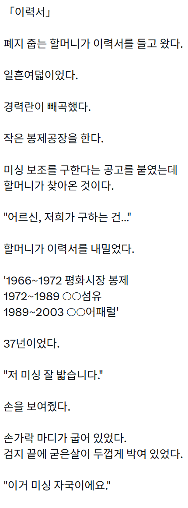
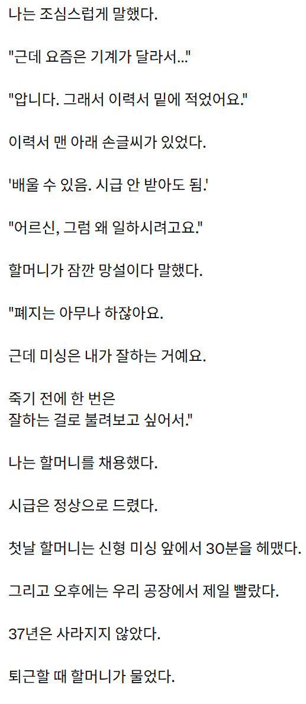
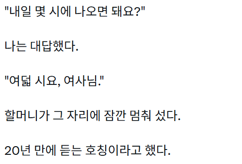

"저녁 여덟 시요, 여사님"

울할매도 늙어서 요리도 청소도 운동도 다 떨어졌는데 바느질 여긴 ㄹㅇ 아직도 대단하더라
나이들어도 몸에 남는건 기술이네
그시절 여공들은
하고싶은 것도 많았던 우리의 누이들이었다
세월은 너무나도 야속한것같아
ai 글 엄청 잘 쓰는구나ㄷㄷ
다음날 중국식으로 QR 코드 목걸이 하고올지모름
5년뒤 "도와줘 누나!! 물량 터졌어!!"
비가 많이 오던 날이었다.
가게 문을 닫으려는데
할아버지 한 분이 들어왔다.
우산을 고쳐달라고 했다.
살이 두 개나 부러져 있었다.
“이건 새로 사시는 게 더 싸요.”
할아버지는 한참 우산을 바라봤다.
“얼마인데요?”
“비슷한 거 만 원이면 사요.”
할아버지가 고개를 끄덕였다.
그러고는 우산을 다시 접었다.
이상해서 물었다.
“그래도 고치실 거예요?”
“예.”
“왜요?”
할아버지가 손잡이를 만지작거렸다.
검은색 플라스틱 손잡이였다.
군데군데 칠이 벗겨져 있었다.
“마누라가 사준 거라.”
나는 더 묻지 않았다.
30분 정도 걸렸다.
할아버지는 수리비를 내고
몇 번이나 우산을 펼쳐봤다.
잘 펴졌다.
문을 나서기 전에 말했다.
“이제 비 와도 되겠네.”
그날은
할머니 기일이었다.
그럼 창녀들은 나중에 늙으면..